GLICD

Gestionnaire de fichiers
Les documents, la musique, les photos et les films sont des fichiers pour Debian GNU/Linux.
Ces fichiers sont organisés dans des dossiers. Pour les retrouver, il faut utiliser Thunar.
Thunar est un gestionnaire de fichiers rapide et facile d’utilisation pour l’environnement de bureau Xfce.
Ouvrir le gestionnaie de fichiers : Applications > Gestionnaire de fichiers
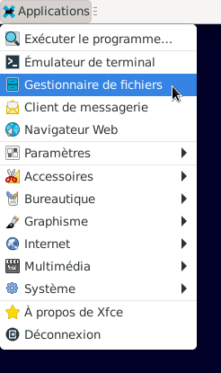
Le gestionnaire de fichiers Thunar s'ouvre.
Toutes les modifications de Fichier ou Dossier devront se faire ici pour le mode graphique.
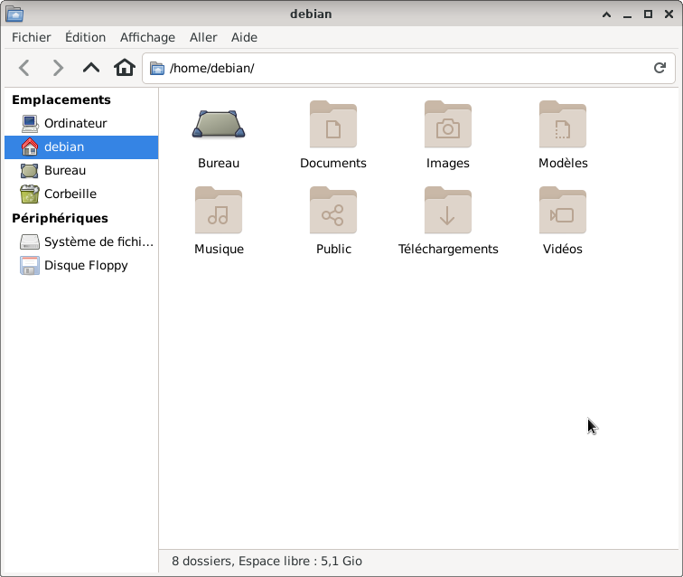
Le volet de gauche est organisé en plusieurs catégories :
- Emplacements :
Ciquer > Ordinateur : Le ou (les) disque(s) dur(s) du PC
Cliquer > Debian (nom utilisateur) : le dossier personnel de l'utilisateur :
Bureau, Documents, Images, Modèles, Musique, Public, Téléchargements et Vidéos
C'est dans ces fichiers qu'il faudra enregistrer les douments pdf, musique, photos etc.
Cliquer > Bureau : Les icônes (raccourcis) du bureau qui ont été ajoutées par l'utilisateur.
Cliquer > Corbeille : Tout ce qui est déplacé dans la corbeille.
- Périphériques : Affiche les partitions du système ainsi que les supports amovibles.
Cliquer > Système de fichiers, vous accédez à la racine du système de fichiers.
Brancher un support externe exemple : une clé usb. La clé usb sera visible sous Périphériques.
Disque Floppy : Le pc a un lecteur de disquette.
- Réseau : n'apparaît pas dans cet exemple.
Ajouter un dossier.
Exemple : ajout d'un dossier du nom de vacances dans Vidéos :
- Aller dans debian > Vidéos (1 clic gauche sur debian et double clic gauche sur vidéos)
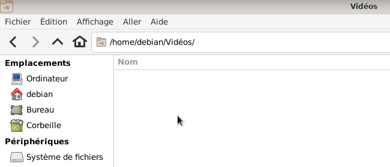
- Positionner la souris comme sur l'image ci-dessus.
Clic droit avec la souris, une fenêtre apparaît.
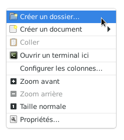
- Cliquer > Créer un dossier, une fenêtre apparaît.
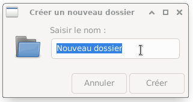
- Saisir le nom du nouveau dossier, ici "vacances"
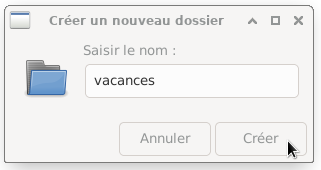
- Cliquer > créer
Le dossier vacances est créé dans le dossier Vidéos.
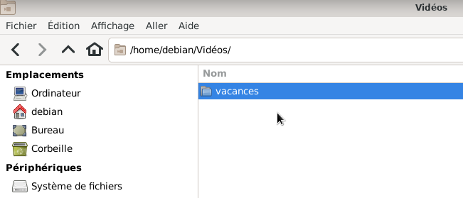
Suppression d'un dossier (même procédure pour un fichier).
- Pour supprimer ce dossier "vacances" clic droit sur vacances > Déplacer dans la corbeille
D'autres fonctionnalitées sont disponibles comme : Copier, Coller, Renommer, etc.
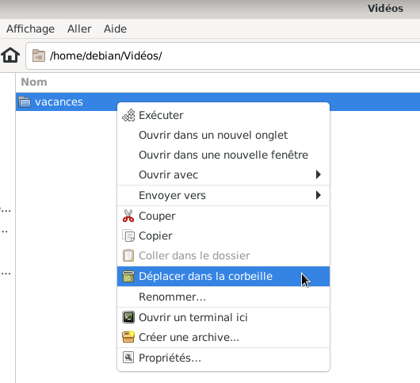
- Cliquer > Corbeille, le dossier vacances s'y trouve.
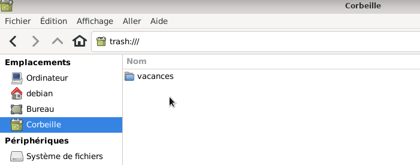
- Clic droit sur Corbeille > vider la corbeille, une fenêtre de confirmation apparaît.
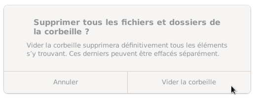
- Cliquer > Vider la corbeille
Conseil : Vider la Corbeille de temps en temps.
Affichage.
Par défaut la vue est en icône. La vue peut se faire en liste ou compacte.
Cliquer > Affichage > Vue en liste
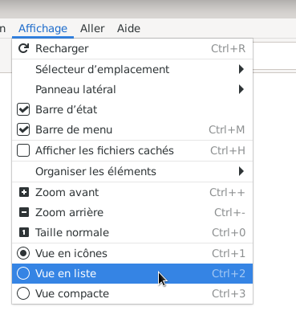
Fermer Thunar : Fichier > Fermer la fenêtre.
Pour d'autres fonctionnalités, consulter la documentation dans Aide > Guide d'utilisation > Lire en ligne.
Merci